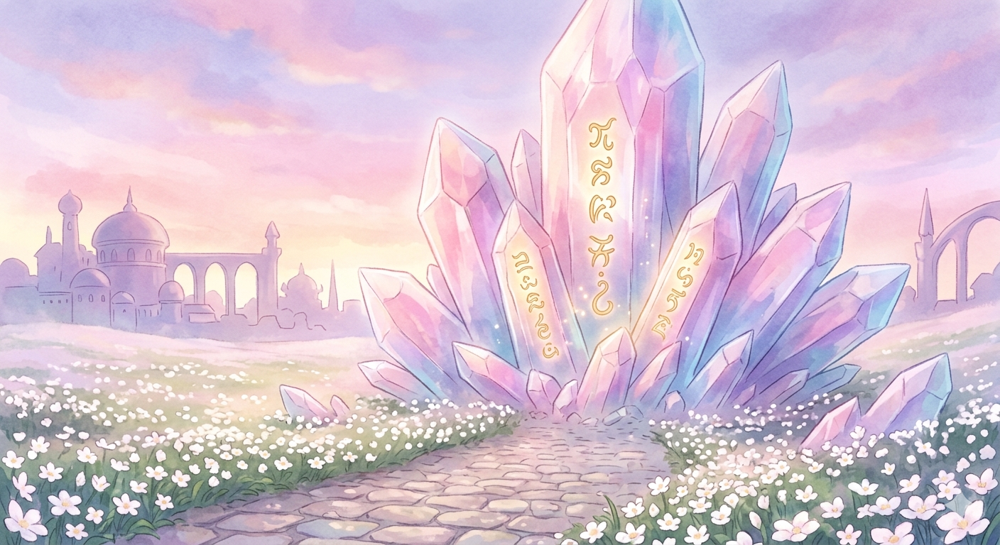

【碑文の声を聴く】
（光の碑文に触れて、これからあなたと世界の共鳴がはじまります。）
街の門をくぐる手前、喧騒から少し離れた高台に、この「響きの記念碑」は立っています。
地中から現れた巨大な水晶のクラスターが、暁の柔らかな光に包まれて、パステルピンクや紫に輝く「響きの記念碑」となっています。水晶の表面には、金色の文字で神秘的な碑文が刻まれ、かすかに光を放っています。記念碑へと続く石畳の道の両脇には、小さな白い花が咲き乱れ、遠くにはレムリアの街のドームや塔がシルエットとなって見えています。誰もいない静寂な空間に、魂の響きだけが満ちています。
このページは、読みやすさを大切にして「クリーム色の背景」に濃い青色の文字を基調としていますが、どうぞ心の中では、光り輝く水晶に刻まれた「魂の響き」として受け取ってください。
地中から現れた巨大な水晶のクラスターが、暁の柔らかな光に包まれて、パステルピンクや紫に輝く「響きの記念碑」となっています。水晶の表面には、金色の文字で神秘的な碑文が刻まれ、かすかに光を放っています。記念碑へと続く石畳の道の両脇には、小さな白い花が咲き乱れ、遠くにはレムリアの街のドームや塔がシルエットとなって見えています。誰もいない静寂な空間に、魂の響きだけが満ちています。
このページは、読みやすさを大切にして「クリーム色の背景」に濃い青色の文字を基調としていますが、どうぞ心の中では、光り輝く水晶に刻まれた「魂の響き」として受け取ってください。